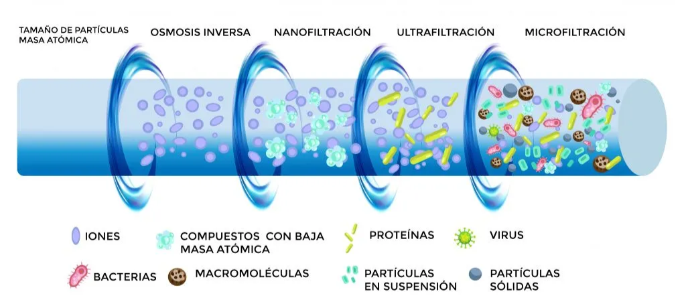

Filtración industrial
La barrera porosa que separa sólidos de fluidos: mecanismos de retención, teoría basada en la ley de Darcy, tipos de filtros industriales, medios filtrantes y ciclo de operación, con gráficas y calculadoras interactivas.
La filtración es una de las operaciones de separación más antiguas y, a la vez, más extendidas de la industria de procesos: desde producir agua potable hasta recuperar el cristal de un producto farmacéutico o deshidratar lodos. Esta lectura recorre los mecanismos de retención de partículas, la teoría basada en la ley de Darcy, los grandes tipos de filtros industriales, los medios filtrantes y el ciclo de operación, con gráficas y calculadoras para dimensionar el equipo de su proyecto.

Si su proyecto requiere separar sólidos de un líquido (en la planta de pectina es muy probable), debe:
- Caracterizar la suspensión: concentración de sólidos, tamaño y naturaleza de las partículas, propiedades del líquido.
- Definir el objetivo: ¿clarificación del líquido o recuperación de sólidos? ¿Qué grado de separación se requiere?
- Seleccionar un tipo de filtro industrial adecuado para la aplicación y justificar la elección.
- Estimar preliminarmente el área de filtración requerida con datos de laboratorio (si se tuvieran) o valores típicos de la literatura para la resistencia específica de la torta y la resistencia del medio de sistemas similares.
- Describir el ciclo de operación del filtro seleccionado.
1. La filtración como barrera esencial
La filtración es una operación unitaria de separación mecánica o física diseñada para remover partículas sólidas suspendidas en un fluido (líquido o gas), mediante el paso de este a través de un medio poroso (el medio filtrante). Los sólidos son retenidos por el medio, mientras que el fluido clarificado, el filtrado o permeado, lo atraviesa.
Objetivos principales
Especialmente en el tratamiento de aguas, la filtración persigue tres objetivos no excluyentes:
- Clarificación del fluido: eliminar turbidez, partículas suspendidas y microorganismos (bacterias, protozoos) para producir agua potable segura o un efluente que cumpla la normativa ambiental.
- Recuperación de sólidos: en muchos contextos industriales, los sólidos retenidos son el producto de interés (cristales, pigmentos, biomasa).
- Pretratamiento: a menudo la filtración es una etapa previa a procesos de purificación más avanzados (desinfección UV, ósmosis inversa, adsorción).
2. Principios fundamentales
Mecanismos de retención de partículas
La forma en que las partículas son retenidas depende de su tamaño relativo al de los poros del medio y de las características del flujo. Rara vez actúa uno solo: varios mecanismos operan simultáneamente.

Tabla 1. Mecanismos de retención de partículas en filtración.
| Mecanismo | Cómo retiene la partícula | Régimen |
|---|---|---|
| Tamizado (straining) | Las partículas más grandes que los poros del medio son retenidas mecánicamente en la superficie. Es el mecanismo dominante en la filtración superficial y el responsable de la formación de la torta. | Superficial |
| Intercepción | Partículas más pequeñas que los poros quedan retenidas si tocan la superficie del medio al seguir las líneas de flujo del fluido. | En profundidad |
| Impacto inercial | Partículas con suficiente masa no logran seguir las líneas de flujo cuando estas se curvan alrededor del colector, y chocan contra él por su propia inercia. | En profundidad |
| Sedimentación | Partículas suficientemente densas sedimentan por gravedad y se depositan sobre los granos o fibras del medio dentro del lecho. | En profundidad |
| Adhesión / difusión | Partículas muy finas (submicrónicas) se mueven por difusión browniana y quedan adheridas al colector por fuerzas superficiales (van der Waals, electrostáticas). | En profundidad |
Filtración superficial vs. filtración en profundidad
Cuando el tamizado domina y los sólidos se acumulan sobre la cara del medio, hablamos de filtración superficial (o de torta). Cuando las partículas son más finas que los poros y quedan atrapadas dentro del lecho por intercepción, sedimentación y adhesión, hablamos de filtración en profundidad, típica de los lechos granulares.
Componentes clave de un sistema de filtración
- Suspensión de alimentación (prefiltrado): la mezcla sólido-fluido que ingresa al filtro.
- Medio filtrante: la barrera porosa que retiene los sólidos. Su elección es crítica.
- Torta de filtración (cake): la capa de sólidos acumulados sobre o dentro del medio. A medida que crece, la torta misma actúa como medio filtrante, a menudo más eficiente para partículas finas.
- Filtrado (o permeado): el fluido clarificado que ha atravesado el medio.
- Fuerza impulsora (): la diferencia de presión a través del filtro (medio + torta) que provoca el flujo. Puede generarse por gravedad, vacío o presión aplicada.
3. Teoría básica de la filtración
El flujo de un fluido a través de un medio poroso, la torta y el medio filtrante, se describe fundamentalmente por la ley de Darcy. Para la filtración, esta ley se modifica para incluir tanto la resistencia de la torta como la del medio. La ecuación general del caudal de filtrado es:
Donde:
- : caudal volumétrico de filtrado (m³/s)
- : área de filtración (m²); : caída de presión a través del filtro (Pa)
- : viscosidad dinámica del filtrado (Pa·s)
- : resistencia de la torta; : resistencia del medio filtrante (m⁻¹)
La resistencia de la torta no es constante: crece a medida que se acumulan sólidos. Se expresa como:
Donde:
- : resistencia específica de la torta (m/kg), propiedad del sólido y de cómo se empaca
- : masa total de sólidos secos en la torta (kg); : masa de sólidos secos por unidad de volumen de filtrado (kg/m³)
- : volumen total de filtrado acumulado (m³)
Al sustituir en la ecuación general, el caudal queda en función del volumen ya filtrado: a mayor , mayor torta, mayor resistencia y menor caudal (a fijo).
Filtración a presión constante ()
Se aplica una diferencia de presión constante y el caudal disminuye con el tiempo a medida que la torta crece. Integrando la ecuación general (con y constantes) se obtiene:
Esta expresión tiene la forma de una recta si se grafica (tiempo por unidad de volumen de filtrado) frente a . De la pendiente y la ordenada al origen de esa recta se determinan experimentalmente y , el procedimiento estándar de un ensayo de filtración en laboratorio.
Linealización a presión constante: vs.
Mueva las propiedades de la torta y del medio para ver cómo cambian la pendiente y el intercepto de la recta de laboratorio ( Pa·s, agua a 20 °C).
La pendiente sube con , y , y baja con y . El intercepto depende solo de la resistencia del medio. Una torta compresible haría que (y por tanto ) cambie al variar .
En un ensayo a bar ( Pa) con agua ( Pa·s), un área m² y kg/m³, se grafica vs. y se obtiene una recta con pendiente s/m⁶ e intercepto s/m³:
- m/kg
- m⁻¹
Con y ya conocidos, se puede escalar a cualquier área y predecir el tiempo de ciclo de la planta.
Filtración a caudal constante ()
Se mantiene un caudal constante, por ejemplo con una bomba de desplazamiento positivo, y la presión aumenta con el tiempo a medida que crece la torta. Reordenando la ecuación general:
Como a caudal constante, la presión necesaria aumenta linealmente con el tiempo (o con el volumen total filtrado) hasta alcanzar el límite del equipo, momento en el que termina el ciclo.
Compresibilidad de la torta
La resistencia específica no siempre es constante. En muchas tortas, sobre todo las de partículas finas o flóculos deformables, aumenta con la presión porque la torta se compacta. Se modela con una relación empírica:
donde es una constante y es el coeficiente de compresibilidad: para tortas incompresibles; para tortas compresibles. Cuando es alto, subir deja de aumentar el caudal porque la torta se compacta y opone más resistencia, un compromiso central del diseño.
Explorador de compresibilidad:
Observe cómo la resistencia específica responde a la presión según el coeficiente de compresibilidad .
Con la curva es horizontal (torta incompresible). A medida que , crece casi proporcionalmente a la presión y el beneficio de subir se desvanece.
Dimensionamiento: caudal y tiempo de ciclo
Con las propiedades de la torta y del medio ya estimadas, esta calculadora resuelve el problema de diseño directo: dado un volumen objetivo de filtrado y una presión de operación, ¿cuánto tarda el ciclo y qué caudal entrega el filtro?
Calculadora de filtración a presión constante
Modelo a constante con Pa·s: . El caudal instantáneo es .
4. Tipos de filtros industriales comunes
No existe un filtro universal: la elección depende de la concentración de sólidos, del objetivo (clarificar vs. recuperar), del modo de operación (continuo o por lotes) y del caudal. Explore las cinco grandes familias en el visor interactivo:
Dos de los equipos más utilizados en planta, el filtro prensa (por lotes) y el filtro de tambor rotatorio al vacío (continuo), se ven mejor en operación:
Ciclo de un filtro prensa de placas industrial: alimentación a presión, formación y compresión de la torta entre las placas y apertura para descargar los pasteles sólidos.
Filtro de tambor rotatorio al vacío (RDVF) en operación continua: cada punto de la superficie recorre las zonas de formación, lavado, secado y descarga en una sola revolución.
Filtración por membranas
Aunque es un tema extenso que se cubre por separado, conviene mencionar que la microfiltración (MF) y la ultrafiltración (UF) son tecnologías de filtración que usan membranas con tamaños de poro definidos para separar partículas muy finas, coloides, bacterias y virus. Junto con la nanofiltración (NF) y la ósmosis inversa (RO), son cada vez más comunes en el tratamiento avanzado de agua y efluentes. Lo que distingue a cada proceso es el tamaño de lo que retiene:
Tabla 2. Procesos de separación por membranas según el tamaño de poro o corte.
| Proceso | Tamaño de poro / corte | Retiene típicamente |
|---|---|---|
| Microfiltración (MF) | 0,1 - 10 µm | Partículas en suspensión, bacterias, protozoos |
| Ultrafiltración (UF) | 0,01 - 0,1 µm | Virus, coloides, macromoléculas, proteínas |
| Nanofiltración (NF) | ≈ 0,001 µm | Iones multivalentes, moléculas orgánicas pequeñas |
| Ósmosis inversa (RO) | < 0,001 µm (densa) | Iones monovalentes, sales disueltas |

5. Medios filtrantes
La elección del medio filtrante es crítica. Los criterios de selección son:
- Tamaño de las partículas a retener.
- Permeabilidad requerida.
- Resistencia química al fluido y a los agentes de limpieza.
- Resistencia mecánica y térmica.
- Costo y vida útil.
Tabla 3. Tipos de medios filtrantes y sus usos típicos.
| Tipo de medio | Ejemplos | Uso típico |
|---|---|---|
| Materiales granulares | Arena, antracita, granate, carbón activado granular | Filtración en profundidad (lechos granulares) |
| Telas tejidas | Algodón, polipropileno, poliéster, nylon | Filtros prensa y de tambor; el patrón de tejido define la apertura |
| Telas no tejidas (fieltros) | Fibras aglomeradas o entrelazadas | Filtración en profundidad o como soporte |
| Papeles filtrantes | Celulosa | Laboratorio o caudales pequeños |
| Membranas porosas | Poliméricas, cerámicas, metálicas | MF y UF, con tamaños de poro controlados |
| Metales sinterizados y mallas | Acero inoxidable poroso, bronce | Alta temperatura o servicios corrosivos |
Coadyuvantes de filtración (ayudas filtrantes)
Cuando la suspensión contiene partículas finas, gelatinosas o compresibles, que forman tortas casi impermeables y disparan la resistencia específica , se recurre a coadyuvantes o ayudas filtrantes (filter aids): sólidos inertes, rígidos y muy porosos que se mezclan con el proceso para construir una torta más abierta y permeable. Los más comunes son la tierra de diatomeas (diatomita), la perlita expandida y la celulosa en polvo.
Se emplean de dos maneras, a menudo combinadas:
- Precapa (precoat): antes de filtrar la suspensión real se hace recircular una lechada del coadyuvante para depositar una capa fina y uniforme sobre el medio. Esta precapa protege el medio del taponamiento y facilita el desprendimiento de la torta al descargar.
- Dosificación continua (body feed): se añade coadyuvante a la suspensión de alimentación durante todo el ciclo, de modo que se incorpora a la torta y mantiene su porosidad, y por tanto un caudal alto, a medida que crece.
El coadyuvante reduce drásticamente y prolonga el ciclo, pero contamina la torta: por eso solo se usa cuando el producto de interés es el filtrado clarificado (no los sólidos retenidos) o cuando la torta es un residuo a descartar. Existe un compromiso de costo: la dosis óptima minimiza el costo total (coadyuvante + tiempo de filtración).
Como el coadyuvante queda mezclado en la torta, su uso está descartado cuando se busca recuperar los sólidos puros (cristales, biomasa, pigmento). En ese caso conviene cambiar de equipo, ajustar (evitando la compactación de tortas compresibles) o pretratar la suspensión con floculación.
6. Ciclo de filtración y operación
Un ciclo de filtración típico para filtros de torta (por lotes) incluye cinco etapas:
- Filtración: formación y crecimiento de la torta hasta alcanzar una presión límite o un caudal mínimo.
- Lavado de la torta (opcional): pasar un líquido de lavado a través de la torta para desplazar el licor madre o recuperar solutos valiosos.
- Secado de la torta (opcional): pasar aire o gas a través de la torta para reducir su contenido de humedad.
- Descarga de la torta: remoción de la torta del filtro.
- Limpieza / preparación del filtro para el siguiente ciclo.
Para los filtros de lecho granular, el ciclo se compone de la etapa de filtración y la de retrolavado (backwashing): se invierte el flujo de agua a una velocidad suficiente para expandir el lecho y arrastrar los sólidos acumulados.
Desafíos clave en operación
Tabla 4. Desafíos clave en la operación de filtros industriales.
| Desafío | Descripción |
|---|---|
| Selección del filtro | Escoger el tipo y tamaño correcto según concentración de sólidos, objetivo y modo de operación define la eficiencia y el costo de toda la etapa. |
| Colmatación y ciclo | La torta crece y el caudal cae (o la presión sube). Fijar el punto de corte del ciclo, cuándo lavar, descargar o retrolavar, es clave para la productividad. |
| Tortas compresibles | Cuando crece con la presión, subir deja de aumentar el caudal. Hay un óptimo de presión que no siempre es el máximo. |
| Retrolavado eficiente | En lechos granulares, dimensionar el caudal de retrolavado para expandir el lecho sin arrastrar el medio determina la recuperación y el consumo de agua. |
| Calidad del filtrado | Cumplir la turbidez o pureza objetivo, y de forma estable a lo largo del ciclo, suele exigir coagulación-floculación previa o un medio adecuado. |
| Manejo de la torta | La humedad final, el desprendimiento del medio y la disposición o valorización de la torta condicionan la elección del equipo y su automatización. |
Si el objetivo es clarificar el líquido (agua potable, efluente), interesa la calidad del filtrado y ciclos largos: lechos granulares o cartuchos. Si el objetivo es recuperar los sólidos (cristales, lodos valiosos), interesan la humedad y la lavabilidad de la torta: filtros prensa o de tambor al vacío. La misma operación unitaria, dos optimizaciones opuestas.
Lectura de referencia
Capítulo de texto base sobre operaciones de separación mecánica de sólidos de líquidos.
7. Bibliografía recomendada
- McCabe, W. L., Smith, J. C., & Harriott, P. (2005). Unit Operations of Chemical Engineering (7th ed.). McGraw-Hill. (Capítulo 29: Filtration).
- Perry, R. H., & Green, D. W. (Eds.). (2019). Perry's Chemical Engineers' Handbook (9th ed.). McGraw-Hill. (Sección 22: Liquid-Solid Operations and Equipment — Filtration).
- Geankoplis, C. J. (2003). Transport Processes and Separation Process Principles (4th ed.). Prentice Hall. (Capítulo 14: Mechanical-Physical Separation Processes — Filtration).
- Svarovsky, L. (Ed.). (2000). Solid-Liquid Separation (4th ed.). Butterworth-Heinemann. Referencia muy completa y especializada en separación sólido-líquido.